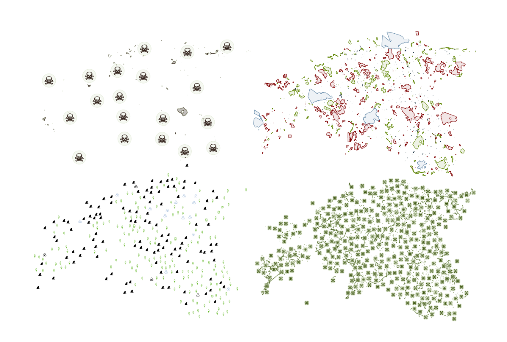
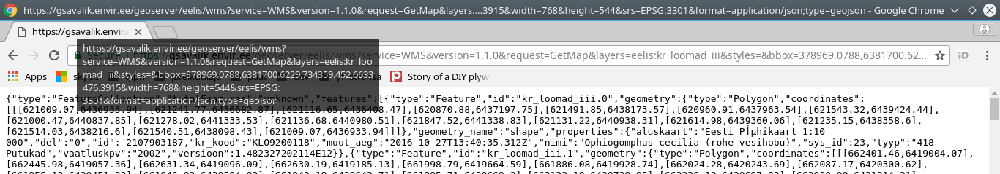

Taust
(ehk miks, kellele ja milleks?)
KRATT
(Keskkonnaagentuuri Ruumiandmete Teenus)
MR AVE
(Metsaregistri avalik portaal)
KOTKAS AVE
(Keskkonnalubade registri avalik portaal)
(ja kui tõele au anda, siis)
Avaliku teabe seadus
Kõik andmed
CC BY 4.0 litsentsiga
("kõik" != reegel, kuid püüdleme selle poole)
ehk siis
andmete kasutamisel on atributsioon oluline! :)
Arendus
GitHubis
(teie panus on teretulnud :))
Nojah,
see kõik on ju ilus, aga räägiks nüüd asjast?
Andmed saadaval standardsete (kaardi-)teenustena
raster: WMS, TMS, WMS-C, WMTS
jpeg, png

Aga Tõnis, mulle üldse ei meeldi see kujundus, mis te kokku olete keeranud..
(päriselt ka...)
vektor: WFS, TMS
GML, GeoJSON*, TopoJSON
* - pole viimase GeoJSONi speki-järgne: srs != EPSG:4326
(...kuid siin läheb asi segaseks)
vektor: WMS

(kuigi...)
miks kasutada WMSi kui kahheldatud andmed on olemas?
TMS gridsetid, mis saadaval
EPSG:3301, EPSG:3857
Seadistus
(detailid huvitatuile)
(peamised komponendid, kuidas tööta,b, joonis?)
Kuhu edasi
Metsaka andmed -
#24
Corine -
#17
Prügilad -
#18
Vektorandmete muudatuste päringud -
#26
https://github.com/okestonia/opendata-issue-tracker/issues https://github.com/e-gov/kem-gsavalik